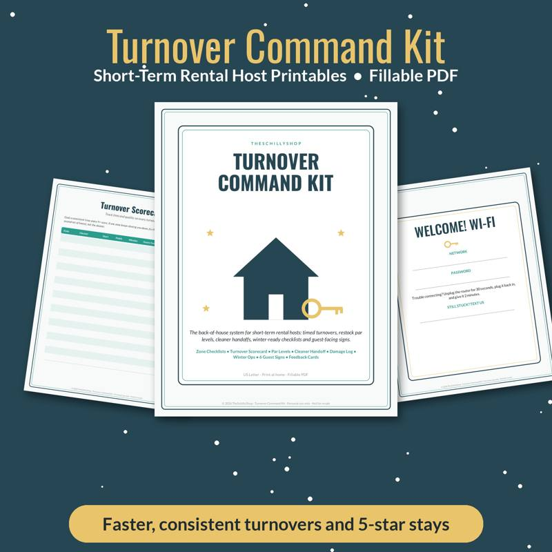
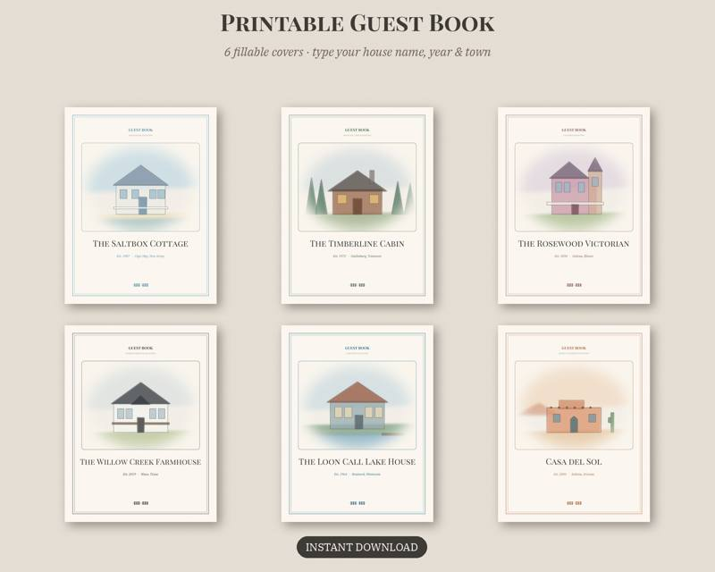

Vacation Rental Cleaning Checklist: Room-by-Room Turnover Guide
Every short-term rental host knows the turnover window can feel tight: one guest checks out, the next arrives in a few hours, and the property needs to look perfect. A consistent cleaning checklist is the single best tool for fast, reliable turnovers — whether you clean yourself or hire a cleaner.
Why a written checklist matters
- Consistency: every turnover gets the same standard, no matter who cleans.
- Speed: a set order means less backtracking.
- Fewer complaints: missed items (hair in the shower, crumbs in the toaster) are common sources of guest complaints.
- Easier training: new cleaners can follow the list from day one.
- Inventory control: restocking becomes part of the routine.
Before you start
- Open windows to air out the space, weather permitting.
- Strip all beds and start the first load of laundry right away.
- Collect all trash from every room.
- Do a quick walk-through for damage, missing items or anything left behind. Take photos.
Kitchen
- Empty and wipe the refrigerator; discard anything left by guests unless it's an item you provide.
- Clean the microwave inside and out.
- Wipe the stovetop, oven door and knobs.
- Check the oven interior for spills.
- Run and empty the dishwasher; check that all dishes are clean and put away.
- Empty and wipe the toaster crumb tray.
- Clean the coffee maker and empty the filter basket.
- Wipe cabinets, handles and backsplash.
- Clean the sink and faucet; polish fixtures.
- Wipe counters and the table.
- Restock: dish soap, sponges, paper towels, trash bags, coffee, tea, sugar, salt and pepper, cooking oil.
- Mop or vacuum the floor.
Bathrooms
- Clean the toilet inside, outside and behind the base.
- Scrub the shower or tub; remove hair from drains.
- Clean the shower door or curtain; replace curtain liners periodically.
- Clean mirrors and glass.
- Wipe vanity, sink and faucet.
- Replace towels, bath mats and washcloths.
- Restock: toilet paper (at least two spare rolls), shampoo, conditioner, body wash, hand soap, tissues.
- Empty trash and replace the liner.
- Mop the floor.
Bedrooms
- Make beds with fresh linens; check mattress protectors for stains.
- Check under beds and in drawers for left-behind items.
- Dust nightstands, dressers, headboards and lamps.
- Check closets: hangers, extra blanket, luggage rack.
- Vacuum floors and under the bed if possible.
- Test lamps and replace bulbs if needed.
- Restock: spare pillows and blankets.
Living areas
- Fluff and arrange pillows and throws.
- Vacuum couches and under cushions.
- Dust surfaces, shelves and electronics.
- Wipe the TV screen gently with a microfiber cloth.
- Check remotes work; replace batteries as needed.
- Straighten books, games and decor.
- Vacuum and mop floors.
Outdoor spaces
- Sweep patios, decks and entryways.
- Wipe outdoor furniture.
- Empty outdoor trash and recycling.
- Check grill: clean grates, check fuel.
- Check hot tub chemistry and cover (if applicable).
Final walk-through
- Check that all lights work.
- Set thermostat to a comfortable arrival temperature.
- Confirm Wi-Fi is working.
- Leave a welcome note or guest book in a visible spot.
- Take "guest-ready" photos for your records.
- Lock all doors and windows, and confirm the keyless entry code is updated.
Restocking list
Track supplies so you never run out mid-season:
- Toilet paper, paper towels, tissues
- Trash bags of every size
- Dish soap, dishwasher detergent, sponges
- Laundry detergent
- Shampoo, conditioner, body wash, hand soap
- Coffee, tea, sweeteners
- Light bulbs and batteries
- First aid supplies
Deep-cleaning schedule
Not everything needs to happen every turnover. Schedule these:
- Monthly: wipe baseboards, clean inside cabinets, wash pillows and duvet inserts, clean vents.
- Quarterly: clean windows inside and out, deep clean appliances, flip or rotate mattresses, clean under heavy furniture.
- Yearly: professional carpet or upholstery cleaning, gutter cleaning, check smoke and carbon monoxide detectors.
Tips for faster turnovers
- Keep two or three full sets of linens per bed so you never wait on laundry.
- Store cleaning supplies on site in a locked owner's closet.
- Use a caddy so supplies move with you room to room.
- Work top to bottom: dust first, floors last.
- Laminate your checklist and keep it in the owner's closet with a dry-erase marker.
Our Vacation Rental Host Turnover Command Kit has printable room-by-room turnover checklists, restock trackers and guest-ready signage designed for exactly this workflow. And a printed guest book is a nice finishing touch that guests often sign and leave notes in.
A great turnover is invisible to guests — they just notice that everything feels fresh and ready. With a checklist, you'll get there faster and more consistently. Planning a family trip of your own? Check out our snow day activities for kids for rainy- or snowy-day ideas.

Turnover cleaning checklists, restock lists and guest-ready signage for short-term rental hosts.
See it on Payhip
Shop the printables mentioned
Vacation Rental Host Turnover Command Kit
Turnover cleaning checklists, restock lists and guest-ready signage for short-term rental hosts.
View on Payhip
Vacation Home Guest Book
A printable guest book for rental and vacation homes.
View on PayhipMore guides
- Baby Shower Prediction Game Ideas (and How to Run Them)
- Bridal Shower Games That Aren't Cringe
- Chili Cook-Off Rules and Scoring: A Complete Host Guide
- Christmas Party Games for Adults (No Supplies Needed)
- Cookie Exchange Party Ideas: How to Host a Christmas Cookie Swap
- A Family Chore System That Actually Works
- Galentine's Party Games Your Friends Will Actually Love
- The Meal Planning Game: How to Get Your Family to Help Plan Dinners
- New Year's Eve Family Traditions Kids Will Love
- Snow Day Activities for Kids: 30 Ideas Indoors and Out
- Teacher Gift Ideas From the Whole Class (Thoughtful and Budget-Friendly)
- Thanksgiving Kids Table Activities That Keep Them Busy
- Ugly Sweater Contest Ideas: Categories, Judging and Fun Twists
- Valentine's Escape Room for Couples at Home: How to Set One Up